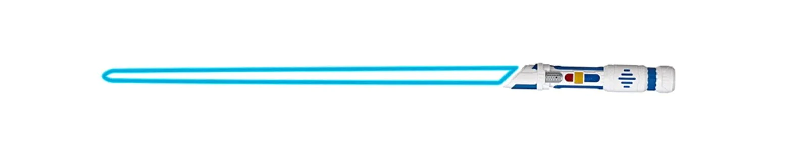
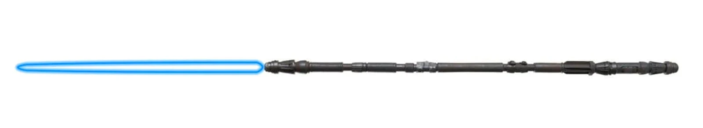

A protokard
A ma ismert fénykardok előtt nagy technológiai fejlődésre volt szükség. Valójában a protokard volt a
szabványos fénykard első változata. Akárcsak a fénykardoknál, a protokardok központi eleme a
kristálymag volt, amely ellátta a fegyvert energiával. A kristály egy foglalatba volt ágyazva, és
innen eredt a fegyver pengéje.
A fő különbség a két technológia között, hogy a markolat még nem önállóan volt jelen, hanem kábel
segítségével egy hordozható tápegységnek köszönhetően müködött, mely energiával látta el a fegyvert
annak korlátozott technológiája miatt. Az összeköttetés miatt a használó jóval kevesebb mozgástérrel
rendelkezett, és folyton figyelnie kellett, hogy a kapcsolat ne szakadjon meg. A plusz energiaegység
ellenére is sokszor jelentkeztek problémák - többek között a túlmelegedés - ezért nem lehetett
hosszútávon használni.
A standard egypengés fénykard
Az egypengéjű fénykard a legklasszikusabb fénykardtípus. Egy körülbelül 20-30 centiméter hosszú
egyenes nyélből és egy 130 cm hosszú pengéből áll. Ezt a fegyvertípust használta Obi-Wan Kenobi,
Luke Skywalker, Darth Vader, Anakin Skywalker, Qui-Gon Jinn, Mace Windu és még sokan mások. Az
egypengéjű fénykardot az egész univerzum leghatalmasabb jedi és sith tagjai használták, ami
rendkívül értékessé teszi ezt a típusú kardot.
Mivel a gyakorló fénykard, amellyel a fiatal Jedik edzenek, az egypengés fénykard kevésbé veszélyes
változata, természetes, hogy a legtöbbjük ezt a fegyvert választja, amikor teljes értékű harcossá
válik. Egész gyermekkorukban ilyen fegyverrel edzettek, miért kellene változtatni?
A shoto fénykard
Shoto a beceneve az átlagosnál rövidebb fénykardtípusnak, amely kényelmet és mozgékonyságot biztosít
azoknak, akik használják. Ellentétben a gyakorló fénykarddal, amely szintén egy kisebb változat, a
shoto egy teljesen funkcionális fegyver, amelyet kisebb emberek vagy lények számára terveztek. A
legegyszerűbb példa egy shoto-kezelőre természetesen Yoda mester a zöld fénykardjával.
A shoto fénykardot a nagyobb méretű harcosok is használják olyan helyzetekben, amikor a kettős célú
fegyverek kombinációja megfelelő. Ahsoka Tano például egy pár rövidebb fénykardot is használt
bizonyos csatáknál a Klónháborúk idején.
A keskenyebb pengével és kisebb markolattal rendelkező kis fénykardot gyakran használják másodlagos
fegyverként a kétpengés harcban. Ennek oka, hogy a rövidebb pengehossz miatt könnyebben kezelhető a
kevésbé mozgékony kézzel. Ez is intenzívebbé teszi a párbajt.
A tonfa fénykard

A Tonfa kard a shoto egy meglehetősen különleges változata. Ez a fénykard egy meghosszabbított
markolattal és egy 90 fokban dönthető másodlagos markolattal rendelkezik, akárcsak egy klasszikus
tonfa, amelyet a bűnüldöző szervek használnak.
Az ilyen típusú fegyver védekező jellege miatt ajánlott volt, hogy a markolatot valamilyen a
fénykardnak ellenálló ötvözetből készítsék. Még ha a penge ki is van kapcsolva, ez a fegyver akkor
is hasznos, mivel még mindig használható az ellenfél megütésére vagy a fénykardcsapások kivédésére.
A gyakorlókard

A gyakorló fénykardok lényegében hagyományos fénykardok voltak, csupán egy állandó alacsony
energiájú beállítás volt beléjük építve, a szabvány fegyvereken lévő szabályozható beállítások
helyett.
Ahogy a nevük is mutatja, a gyakorló fénykardokat oktatási célokra használták, a kezdőket tanítva a
fénykard forgatására. Az állandó alacsony energiájú beállításaiknak köszönhetően a gyakorló
fénykardok károkozás szempontjából igencsak korlátozottak voltak, a legsúlyosabb sérülések
megégetések és kisebb zúzódások voltak. Tulajdonképpen a fegyver annyira gyenge volt, hogy az egyén
fizikailag meg tudta érinteni, és a kisebb égéseken kívül semmilyen sérülést nem okozott.
A víz alatti fénykard
A víz alatti fénykard egy egypengéjű harci kard, amelyet úgy alakítottak át, hogy a víz alatt is
működjön. A legtöbb fénykard (akár egypengéjű, akár nem) leáll, amint a penge a víz felszínéhez ér.
Ezzel szemben a víz alatti fénykardot két kristály táplálja, amelyek egy speciális gyújtóimpulzust
bocsátanak ki, így a penge még a víz alatt is működik.
A Jedi lovag Kit Fisto is ilyen kardot használt, hiszen ő Mon Cala vizes bolygójáról származik.
A ívelt markolatú fénykard
A klasszikus egypengés fénykard egy másik kis változata az ívelt markolatú fénykard, amelyet Dooku
gróf is használt. A markolat ívelt alakja megnehezíti a fénykard építését a kristályok igazítási
folyamata során. Az ívelt fénykard azonban jobb fogást biztosít a kezelőjének, és pontosabb
mozdulatokat tesz lehetővé a fénykardharc során.
A fénykard e formája lehetővé teszi, hogy a markolat jobban alkalmazkodjon a tenyérhez, megkönnyítve
az egykezes harcmodor használatát. Különösen a Makashi, amellyel
az ember megpróbál változó pengeszöget biztosítani az ellenfelek destabilizálása érdekében.
A kétfázisú fénykard
A kettős fázisú kard szokatlan típusú, egypengés fénykard. Egy összetettebb kristályrendszer
segítségével a penge az eredeti hosszának kétszeresére, 1,5 méterről 3 méterre hosszabbítható. A
penge meglepő extra hossza gyakran az ellenfelek megfélemlítését szolgálja, de a harcosok nagyobb
távolságból is támadhatnak vele.
A kétfázisú fénykard markolata olyan alakú, mint egy hagyományos fénykardé, és csak egy aktiválás
szükséges a kard bekapcsolásához. Míg a legtöbb fénykardnak van egy beépített görgős
hosszbeállítása, a kétfázisú fénykardok előre beállított hosszbeállítással rendelkeznek, ami nagyon
gyors átmenetet tesz lehetővé.
A kétfázisú fénykardot a történelem korai szakaszában párbajokra tervezték. Leggyakoribb
felhasználási módja a meglepetés taktika a harcban, amikor a normál hosszúságról a megnövelt
hosszúságra vált, hogy megzavarja az ellenfelet és sakkban tartsa. Természetesen a penge hosszának
növekedése a manőverezőképesség rovására megy.
A nagy fénykard
A nagy (vagy ritkán óriás) fénykard a Shoto teljes ellentéte: ez egy
hagyományos egypengés fénykard, sokkal hosszabb pengével és meghosszabbított markolattal. Az
átlagosnál nagyobb emberek és lények számára tervezett nagy fénykard pengéje 3 méter hosszú is
lehet.
Az ilyen fegyvert használó lényekre példa egy Gorc nevű erőhasználó, aki gamorrai fajba tartozik. A
gamorrai faj példányai akár 4 méteresre is megnőhettek, ezért számára kínos lenne egy átlagos méretű
fénykardot forgatni, amelyet harmadakkora lények számára készítettek, mint ők. A nagy fénykardot
ezért mindig a nagyobb lények számára készítették.
A Qichani kard

A Qidak Aaia jedi mester által készített Qichani egy fénykard, amely egy nagyon hosszú botra van
erősítve, amelyet egy kortózisszál nevű anyagba csomagoltak. Ez egy nagy hatótávolságú botfegyver,
amely két részből áll: a fénykardból és a botból, melyek könnyen leválaszthatók egymásról. Ez utóbbi
rendkívül ellenálló, és arra szolgál, hogy megvédje a botot a fénykard pengéitől, amelyek könnyen
elvághatnák.
A fénykard bot
A fénykard sétapálca a standard vagy a rövid modell egyszerű változata, ez egy botfejbe rejtett
fénykard. Ez teszi a Star Wars-univerzum egyik legfigyelemreméltóbb fegyverévé.
Harc közben a bot nyele könnyen leválasztható, így a rövid nyél sokkal szilárdabb fogást biztosít a
felhasználónak. A fénykard botja végső soron nagyon hasonlít a Qichanihozéhoz, de a kard
meghosszabbítása helyett egyfajta kardhüvelyként funkcionál.
A Quillon kard
A híres Quillon fénykard egy ősi kardmodell, amely egykor nagyon elterjedt volt a harcosok körében.
Három pengés kialakítása "keresztvasként" megvédi a tulajdonos kezét a párbaj során, így jelentős
előnyre tesz szert az ellenféllel szemben.
Ez a technika egy ősi gyártási eljárásból ered, amely abból áll, hogy a kardban lévő kristályt
megtörik és megrepeszti, hogy egyensúlyhiányt hozzon létre, azzal a céllal, hogy sokszorosára
növelje a kard erejét. Ennek az instabilitásnak a feloldásához a kristály által termelt
többletenergiát el kell vezetni. Ezért a nyél mindkét oldalán két adagolónyílás, az úgynevezett
quillonok vannak beültetve, amelyekből az eredeti egy pengén kívül 2 kis penge is előugrik.
A dupla fénykard
A dupla fénykardot, más néven a dupla pengéjű fénykardot legnevesebb használója Darth Maul volt.
Maul mellett más erőhasználók is használtak ilyen fegyvert, mint pédául Pong Krell, akinek négy
karja lehetővé tette, hogy egyszerre két kétpengés kardot használhasson. A kettős fénykardharc a
fegyver nagyfokú elsajátítását igényli, mivel a legkisebb hiba is végzetes lehet a fegyver
tulajdonosára nézve. Ennek ellenére a kétpengés fénykard továbbra is félelmetes és félelmetes
fegyver az ellenfél számára.
Bár semmi sem ér fel a harci képességekkel és az erős erőérzékenységgel, a kétpengés fénykard minden
bizonnyal az egyik legjobb lehetőség bármelyik Jedi vagy Sith számára. Szélesebb védekezést, nagyobb
támadási távolságot és kétszeres esélyt biztosít az ellenség megsebesítésére.
Az összecsatolható fénykardok
Az egymásba illeszthető fénykardok egy pár (gyakran ívelt nyelű) fénykard, amelyeket úgy terveztek,
hogy együtt lehessen használni. Ez a kardpár összekapcsolható, hogy dupla fénykarddá váljon, de
külön-külön is használható. Akárhogy is, nagyon jó harci technikát igényel.
A halított markolatú kombinációnak a legnagyobb előnye, hogy használói meglepő szögekből tudnak
támadni, miközben támadás közben is képesek védekezni. Asajj Ventress Komari Vosa-tól örökölte a
fénykardjait, akit maga is Dooku gróf képzett ki, így kedvet kapott a hajlított nyelű fénykardokhoz.
A forgó fénykard

Ezt a modellt kifejezetten az inkvizítorok, a sötét oldal követőinek csoportja számára tervezték és
gyártották, akik a Galaktikus Birodalom akaratát érvényesítették. Működése egyszerű: a fogantyú a 2
lézersugárzót tartalmazó korongra van erősítve.
Miközben a kezelő egyszerűen csak a markolatot tartja, a körülötte lévő tárcsa lehetővé teszi, hogy
a pengék ultragyors körkörös mozgást végezzenek. Ez szinte lehetetlenné teszi, hogy az ellenfél
eltalálja a kezelőt. A fegyver ezután szinte egy lézerkorongot képez, amelynek éppoly nehéz
ellenállni, mint amennyire destabilizáló. Az ilyen típusú harci fénykard kezelése sokkal
összetettebb és veszélyesebb, mint egy hagyományos fénykardé.
A fényostor
Bár ez egy nagyon ritka fénykardtípus, sokak szerint az egyik legerősebb és legveszélyesebb
fegyvertípus a Star Wars univerzumában. A Jedik számára a lézerkorbács kezelése különleges képzést
igényel, mivel az ellenfél számára éppolyan kockázatos, mint a használó számára.
A hagyományos fénykard energiasugarával ellentétben, amely egy egyenes pengének tűnik, a lézerostor
folyamatos energiasugarat bocsát ki. Sokkal hosszabb és teljesen formálható, mint egy ostor.
Elsősorban arra használták, hogy távolról támadják az ellenfeleket, és hogy kiszámíthatatlanná
tegyék a harcot, mivel kevés harcos tudta, hogyan reagáljon egy ilyen fegyverre. Ez talán a
legsokoldalúbb modell a felsoroltak közül, de csak értő kezek között érheti el a teljes
potenciálját.